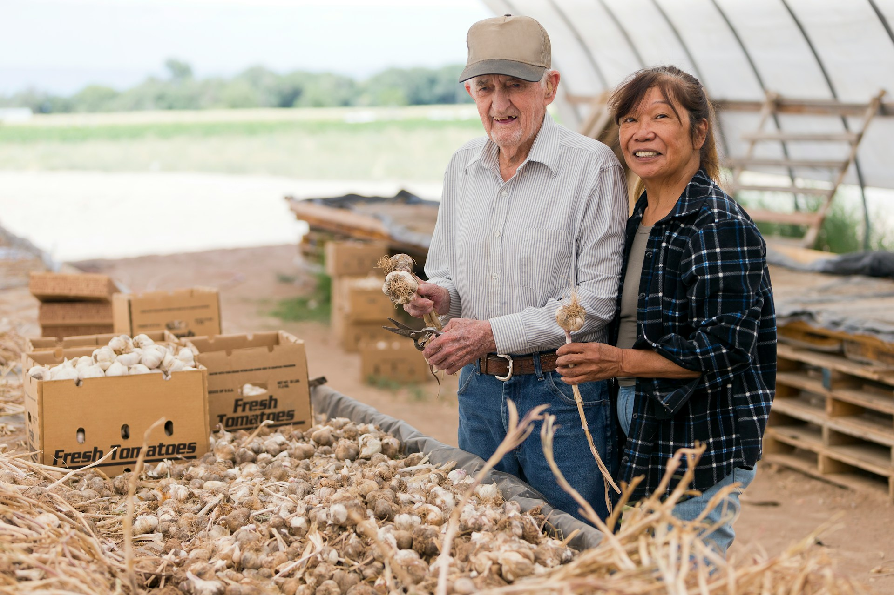
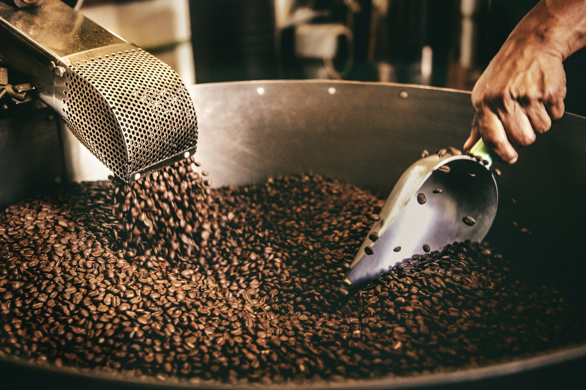
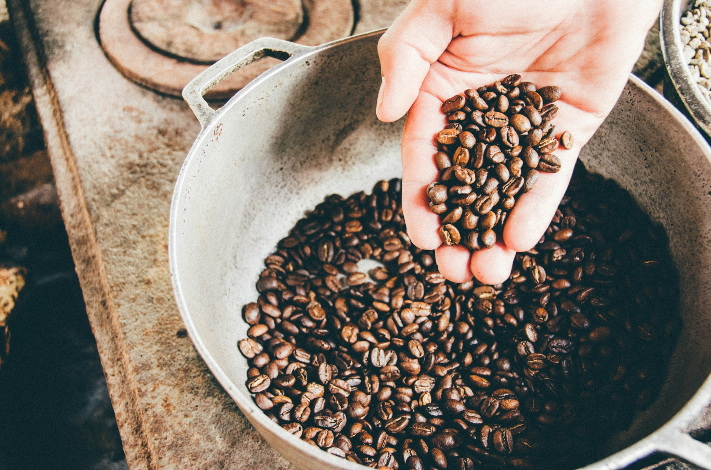
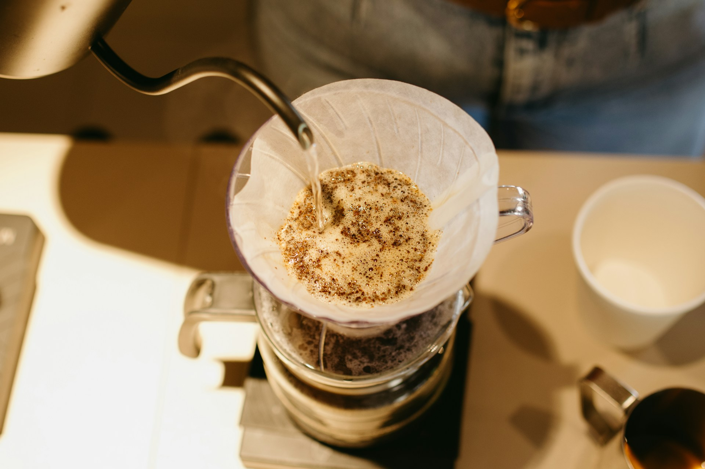
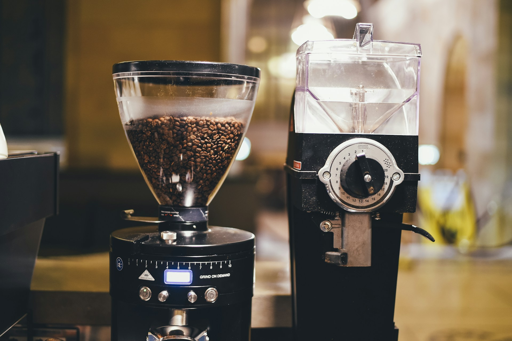

Café de especialidad
Café de especialidad, recomendado para ti
Cafés seleccionados y una guía sencilla para elegir el que va con tu gusto, sin necesidad de saber términos técnicos.
Fotografía por agregar
Quién recomienda
Cada café de Grano Norte lo selecciona una persona que conoce su origen, su perfil de sabor y la mejor manera de prepararlo, y que puede recomendarte el indicado según tus gustos.
- Variedades
- Procesos
- Métodos de preparación
Fotografía por agregar

Del grano a la taza
Fotografía por agregar

Fotografía por agregar

Fotografía por agregar

Fotografía por agregar

Fotografía por agregar
¿No sabes cuál elegir?
Dinos qué sabor te gusta y cómo lo prefieres, y te llevamos a los cafés que mejor van contigo.
Encuentra tu caféUbicación y contacto
Consulta la ubicación de referencia del proyecto y las formas de contacto.